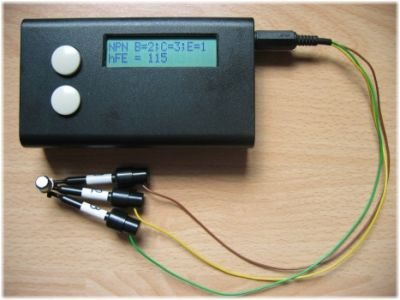
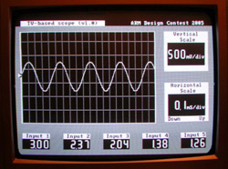

A weblog focused on interesting circuits, ideas, schematics and other information about microelectronics and microcontrollers.
E-books
Disclaimer
Because I have not tested all electronic circuits mentioned on this pages, I cannot attest to their accuracy; therefore, I do not provide a warranty of any kind and cannot be held responsible in any manner.
tools
A "Logic Probe - Next Generation"
27. June 2010 - 12:30 — adminAn older article, but a good idea... Logic probe on steroids.
Cheap Propeller programmer
16. March 2010 - 11:45 — adminParallax sells the Propeller USB stick PropPlug to program the Propeller MCU. Here is an idea how to make the PropPlug from an Nokia data cable.
Very Accurate LC Meter
21. November 2009 - 15:46 — adminAnother hobbyist tool, based on "old good" PIC16F84A. A perfect companion to your multimeter.

Component checker / tester
9. October 2009 - 18:57 — adminEveryone knows the problem: You have a transistor, but you can't read its signature. Or you can't find the datasheet... You have a diode, but... You have a capacitor, but you can't read... Here is a smarty solution.

TV-based oscilloscope (with ARM7)
28. September 2009 - 16:54 — adminThis TV-based Oscilloscope is based on a LPC2138 microcontroller application. It can be used to convert a standard television into a high-functioning oscilloscope.

USB Logic Analyzer
13. September 2009 - 14:54 — adminLogic analyzer based on Altera FPGA with USB interface.

Z80 In-Circuit Emulator Kit
20. July 2009 - 19:28 — adminDo you need to debug a Z80-based computer "in situ"? If yes, this is an ultimate "must-have" tool.

USBPicProg
25. June 2009 - 20:08 — adminUSBPicProg is a simple, open source USB in circuit programmer for Microchip PIC processors.

EASy68K - Editor/Assembler/Simulator for the 68000
21. November 2008 - 18:39 — adminEASy68K is a 68000 Structured Assembly Language IDE. EASy68K allows you to edit, assemble and run 68000 programs on a Windows PC. No additional hardware is required. EASy68K is an open source project distributed under the GNU GPL.
LCS-1M: A Low-Cost Hobby Oscilloscope
6. November 2008 - 18:06 — adminAn oscilloscope is an invaluable tool for anyone working in electronics. LCS-1M is a simple yet full-featured homemade digital sampling oscilloscope.